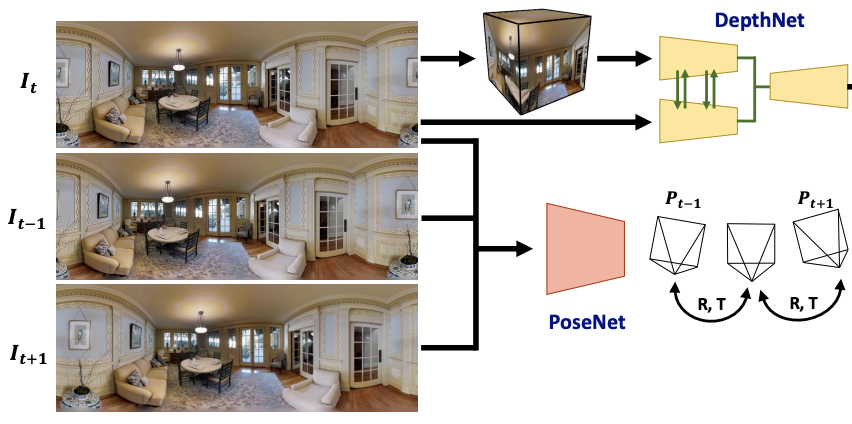
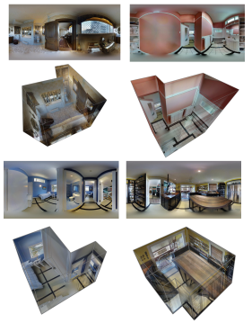

|
I got my second M.S. degree at CMU MSCV, and a first M.Sc. from National Yang Ming Chiao Tung University(NYCU) advised by Prof. Wei-Chen Chiu, Prof. Min Sun,and Dr. Yi-Hsuan Tsai. Currently, I work as an Applied Scientist at Adobe, where I contribute to the Firefly GenAI team, focusing on generative AI product development. My background spans both academic and industrial research, with publications in top-tier conferences and hands-on experience bringing advanced machine learning systems into production. I am actively seeking opportunities as an Applied Scientist or Machine Learning Engineer, particularly in areas involving deep learning, generative models, or large-scale training pipelines. Please feel free to reach out if you're hiring or open to collaboration.
Email: alice12595@gmail.com |
|
My research interest mainly focuses on deep learning and computer vision. I am currently working on projects related to scene understanding, such as depth and layout estimation. My goal is to build enriched vision applications and reliable AI systems that can perceive various environments and produce robust estimations for humans. |
|  |
Fu-En Wang, Yu-Hsuan Yeh, Min Sun, Wei-Chen Chiu, Yi-Hsuan Tsai TPAMI, 2022 paper / code We propose a new fusion module and Contrast-Aware Photometric Loss to improve the performance of BiFuse and increase the stability of self-training on real-world videos. |
 |
*Yu-Hsuan Yeh, *Fu-En Wang, Min Sun, Wei-Chen Chiu, Yi-Hsuan Tsai CVPR, 2021 (Oral Presentation) project page / cvpr paper / code We propose a differentiable layout-to-depth procedure to convert the 360 layout representation into the 360 horizon-depth map, thus enabling the training objective for our layout estimation network to take advantage of 3D geometric information. |

|
*Yu-Hsuan Yeh, *Fu-En Wang, Min Sun, Wei-Chen Chiu, Yi-Hsuan Tsai CVPR, 2020 project page / cvpr paper / code We propose a two-branch neural network leveraging two common projections – equirectangular and cubemap projections – as inputs to predict the depth map of a monocular 360 image. |
|  |
*Yu-Hsuan Yeh, *Fu-En Wang, Min Sun, Wei-Chen Chiu, Yi-Hsuan Tsai Arxiv, 2020 paper / code We release the first real-world dataset containing paired depth and layout annotations. |